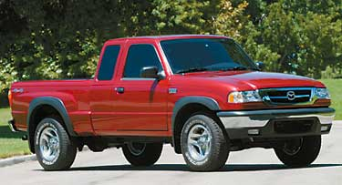

When shopping for a vehicle, you balance numerous considerations,including price, safety features, dependability, size and fueleconomy. Which of these become most important depends on individualneeds and preferences. In today's market, though, you can find amodel that provides what you need and want, and that is best amongits competition with regard to emissions and fuel economy ? the twodominant influences over an automobile's environmentalfootprint.
'Within each vehicle class, there are a number of standout modelsthat allow you to make an eco-friendly ? or at leasteco-friendlier ? decision without sacrificing features,' sayJames Kliesch, principal vehicle analyst for the American Councilfor an Energy-Efficient Economy (ACEEE) and lead author of ACEEE'sannual environmental guide to cars and trucks. 'First, consideryour needs for the vehicle, as well as your price range. Once youhave those down, begin shopping with the environment inmind.'
Consider whether your needs will be ongoing (room for the wholefamily) or only occasional (four-wheel drive for off-roadactivities), Kliesch adds. For those occasional situations, it'smore cost-effective to rent an appropriate vehicle. Also, don'tpigeonhole yourself into one class ? for example, several sedans,station wagons and smaller SUVs offer the functionality of theirlarger competitors, but they guzzle less gas and spew lesspollution.
When weighing your final choices, pick the greener vehicle. Thedecision will save you hundreds of dollars a year in fuel costs,and you'll contribute less to pollution and our oil dependence.Plus, you'll send a powerful signal to automakers: Green meansgo.
Go toMother Earth Shopping to purchase ACEEE's Green Book: TheEnvironmental Guide to Cars & Trucks.
For more information on green transportation options, visit theAlternative Transportation Page, hosted by Mother EarthNews.
|
 The Mazda B2300 has the best fuel economy of model year 2005 compact pickups, achieving 24 miles per gallon in city driving and 29 mpg on the highway. |
|
|